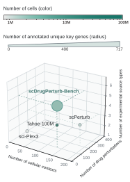
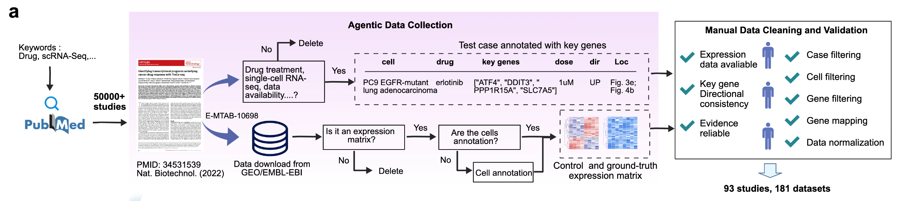
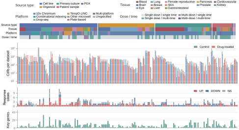
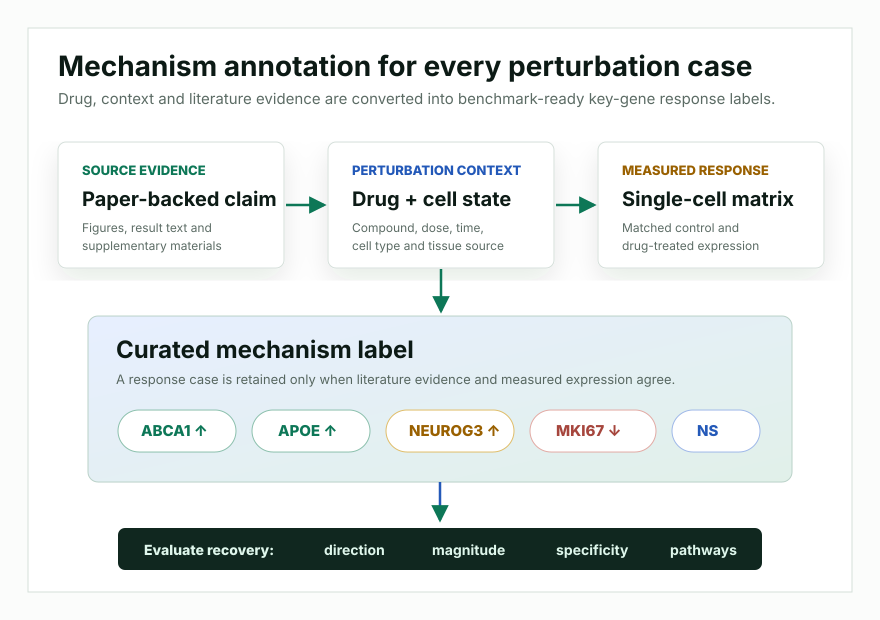

Literature-grounded cases
Each case records the cellular context, drug identity, dose, time and post-perturbation gene changes supported by the source paper.
scDrugPerturb-Bench links expression matrices to literature-backed biological mechanisms. Each retained case connects drug, dose, time, cellular context and key-gene response evidence, making the dataset useful for building and evaluating intelligent virtual-cell models.

The benchmark starts from more than 50,000 PubMed records and retains manually verified studies where measured single-cell responses are aligned with experimentally supported drug-response mechanisms.
The curation workflow extracts biological claims from papers, connects them to single-cell matrices, verifies the measured response and removes cases where literature evidence and expression data disagree.

Each case records the cellular context, drug identity, dose, time and post-perturbation gene changes supported by the source paper.
The final resource includes matched control matrices, drug-perturbed matrices, drug metadata and curated response annotations.
All retained data pass through a consistent workflow for cell filtering, gene mapping, gene filtering and normalization.
The dataset preserves the heterogeneity found in real perturbation studies, from controlled cell-line experiments to organoids, primary cultures and patient-derived samples.
Patient-derived xenograft data are retained as a training source because the category is too small for a standalone test split.

Instead of treating expression reconstruction as the only objective, scDrugPerturb-Bench records directionally annotated response genes so predictions can be judged by whether they recover the biology reported in the literature.

The current benchmark contains 423 directionally annotated response cases, enabling model evaluation at the level of key genes, gene sets and pathways.
Experimental designs range from single-dose, single-time measurements to multidose and multitime studies.
Existing perturbation resources are valuable expression-profile collections, but many do not provide case-specific directional response annotations. scDrugPerturb-Bench couples multi-source perturbation matrices with manually curated mechanism-level evidence.
Models can be evaluated on whether they recover response direction, effect magnitude, mechanism specificity and pathway-level response polarity.
The benchmark supports cell-line and source-aware scenarios, including OOD drug, cell, tissue, drug-cell pair and unseen-source settings.
The dataset is designed to grow as new single-cell drug perturbation studies and mechanism annotations become available.
Twenty representative cell-line cases are available on Hugging Face. For access to the full dataset, contact the Simucella team.
Browse the public scDrugPerturb-Bench sample on Hugging Face.
Open Hugging Face datasetRead the benchmark story, mechanism metrics and evaluation results.
Open research pageRequest access, collaborations or dataset questions by email.
mindflow.ai.lab@gmail.com